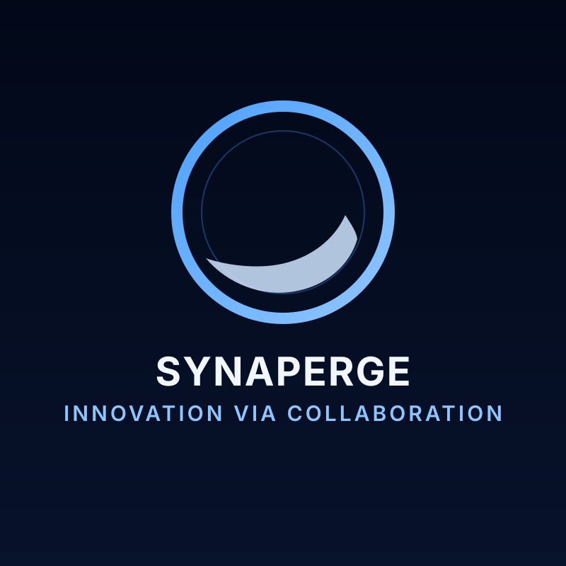

Synaperge
Interdisciplinary collaboration, critical discourse, and innovation-driven action.
Synaperge is dedicated to empowering individuals through interdisciplinary collaboration, critical discourse, and innovation-driven action. The organization provides a platform for members to explore emerging ideas, engage with diverse fields, and lead purpose-driven initiatives that address real-world challenges. Through seminars, projects, and leadership opportunities, Synaperge cultivates the next generation of changemakers equipped to navigate and shape an evolving world.
Synaperge Logo

My Role: Founder and President
2023 — Present
- Scaled Synaperge to a 56-member international community by building a structured recruitment, onboarding, and engagement model that connected members across disciplines and geographies around shared impact goals.
- Designed and moderated interdisciplinary seminars on AI ethics, innovation strategy, and social impact, creating recurring spaces for nuanced discussion, evidence-based debate, and collaborative idea development.
- Led planning and launch of a youth-focused AI Ethics course, including curriculum framing, session sequencing, and learning outcomes that helped early learners critically evaluate algorithmic fairness and responsible technology use.
- Incubated and guided three community innovation projects focused on AI bias in education technology, fast-food branding psychology, and financial app accessibility, translating exploratory concepts into actionable project pathways.
- Built a purpose-driven leadership culture through mentoring, delegation, and initiative ownership, enabling members to move from discussion to implementation while strengthening long-term organizational sustainability.
Synaperge Certification
Free, online, shareable credential
Earn a free, shareable, online credential with Synaperge on Innovation and AI!
Synaperge now offers free, online, shareable credentials and certificates to learners who complete our open-access educational modules. Our first course, Introduction to Artificial Intelligence and Innovative Reasoning, is now live — designed for curious minds at any level, with no prior technical background required.
This marks a key step in our mission to democratize knowledge at the intersection of ethics, innovation, and leadership. Each credential issued is not only a marker of completion, but also a recognition of an individual’s engagement with responsible, forward-thinking problem solving.
Built for accessibility. Rooted in integrity. Focused on future impact.